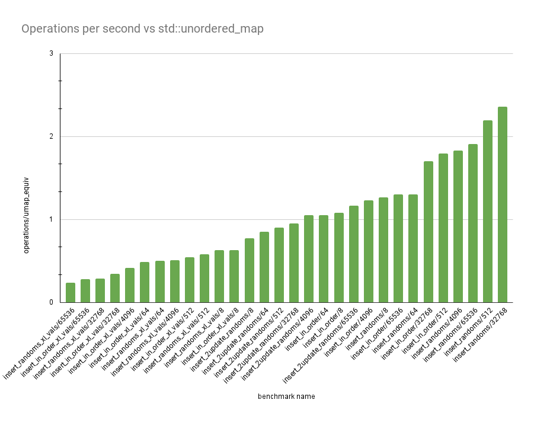

Yet Another Hashtable

This article details how my hashtable implementation evolves over time. First, I will detail my high-level logic and version 0.1.0. Hopefully things will get a lot faster over time.
The hashtable is being built as part of a hashtable drag-race. The
participants are std::unordered_map, FFHT (by
this guy) and me. Mine is just called HashTbl.
High-level Design
My table is a probing table, 0.1.0 currently does linear probing.
Entries are stored as (key, value) pairs in a big pool, with only one
allocation for the lifetime of the table.
Memory Layout
The single allocation is laid out like this:
┌───────────────────┐
│ │
│ metadata │
│ │
├───────────────────┤
│ │
│ data │
│ │
└───────────────────┘
Very innovative. The data section is just an array of Entrys. Where
an Entry is
struct HashTbl<Key, Val>::Entry {
size_t hash; // precomputed hash
Key key;
Val val;
};
The metadata section ought to store some kind of information that lets
us figure out what entries are valid. For this, we use an array of
bytes, we will call this ctrlbytes. Essentially, we have this set up
such that ctrlbytes[i] stores a byte of metadata about entries[i].
Each byte can be either CTRL_EMPTY (the slot is free, no need to
probe), CTRL_DEL (the slot is deleted) or stores 7 bits of hashcode
so that we can quickly check if we should even bother looking in the
main buffer. This is obviously inspired by swisstable's SIMD lookup,
which lots of hashtables use now (e.g.
std::collections::HashMap
).
Lookup
We have one function that does all the heavy lifting here --
get_slot().
bool get_slot(size_t h, Key const &key, Entry *&slot, char *&ctrl_slot)
This function just returns a pointer to the slot where we can put an
entry with key key, and tells us if that slot is empty or already
occupied. From this, we derive both insert() and get().
Ctrl bytes are arranged in aligned chunks. These chunks currently are 16 bytes wide. Typically, we would iterate over each byte in the chunk, but hopefully doing a few SIMD instructions will let us do this faster. What's exciting is I made the whole thing generic over a chunk size and an underlying generic SIMD vector type... Incoming comparison of different vector sizes. My hardware supports AVX-512, so that should be fun.
The only SIMD instruction we need to understand is
simd<vector_t>::movemask_eq.
template <typename T> struct simd
{
using movemask_t = typename usimd<T>::movemask_t;
/**
* Construct a mask, where each high bit represents an equality match
* of the byte `b`.
*/
static movemask_t movemask_eq(T v, char b)
{
T const splat = usimd<T>::splat_i8(b);
T const eqmask = usimd<T>::cmpeq_i8(splat, v);
return usimd<T>::movemask_i8(eqmask);
}
};
As the docs above say, we are constructing a bitmask, with 1 bit for
each byte in the vector type, where the bit at index mask[i] is 1
iff the byte at index v[i] is equal to b. E.g. a i8x4 vector type
would map (remember, little-endian)
simd<i8x4>::movemask_eq(0xab12ab34, 0xab) -> 0b0101
For SSE, this is three instructions and is done as follows:
- Splat (broadcast)
bto every byte in the vector, to create a new vectoru. - Do a bytewise equality comparison with
uandv. This gets you0x00ff00fffor the above example. - Squish this to a bitmask.
Lookup, conceptually, is very simple then. Once we have the insertion
index (hash % size), we find the chunk that's a part of. Then we
produce a few masks:
ctrlmask_t keep_mask = std::numeric_limits<ctrlmask_t>::max() << ctrlbyte_offset;
ctrlmask_t hit_mask = movemask_eq(ctrlchunk.as_simd(), h7(h)) & keep_mask;
ctrlmask_t empty_mask =
movemask_eq(ctrlchunk.as_simd(), CtrlChunk::CTRL_EMPTY) & keep_mask;
First, to clear any confusion, bit indices start at the
least-significant bit. The keep_mask is telling us to ignore the
first few bits. Index 18 for example would require us to skip bits
0..=1, since there is no point probing those.
We use __builtin_ctz() to find the next offset to probe at. This
compiles to a rep bsf string instruction... Since we're actually
trying to produce a mask equal to the final high-bit, there are other
bit-manipulation ways we can do this, and we spam __builtin_ctz()
a lot. More to come on benchmarks with this.
So, as you can imagine, we're essentially getting these chunk masks in
order and consuming either the next empty entry or the next h7 hit and
updating the masks as we go. Whenever we get an h7 hit, we go into the
main Entry[] buffer and test full equality on the key. A type trait is
added for how key equality should be computed, either first test the
hash then the full key, or just test the keys right away. For a
std::string, you could be better off testing the hash first, but
again, I'd need to do some benchmarks to find out.
So how fast is it?
Not very. But, I think we can get this much, much faster. The next article will hopefully detail how I do that.

The graph shows a variety of different benchmarks (could do an
interactive one, but I want to keep my website simple HTML). The Y-axis
shows the number of operations we do for every 1 operation
std::unordered_map does in the same benchmark.
Each benchmarks has a name, parameterized by some value N.
insert_in_order: Insert0..Nin order.insert_randoms: InsertNrandom ints in order.insert_2update_randoms: InsertNrandom ints in order, then update them all, then update them all again.insert_in_order_xl_vals:insert_in_order, but with512-byte types for theValtype.insert_randoms_xl_vals:insert_randoms, but with512-byte types for theValtype.
The benchmark I will be most focusing on is insert_2update_randoms,
since it provides a pretty holistic judgement about the table. Right
now, I get -13% to +17% performance vs std::unordered_map, which is
fine, I guess. I'm not too worried about the XL vals benchmark,
because you can always just put pointers to a buffer in your map
instead. Across non-XL benchmarks we have an average speed buff of +37%
over std::unordered_map, which I'm pretty happy about.
The map is also tested against an oracle on a series of a billion random operations. I also did that thing where you change values across the code by 1 in a bunch of spots and see if the oracle fails and it does everywhere I tried, so I'm confident these results aren't bogus no-ops (not that they're good enough to suggest that).